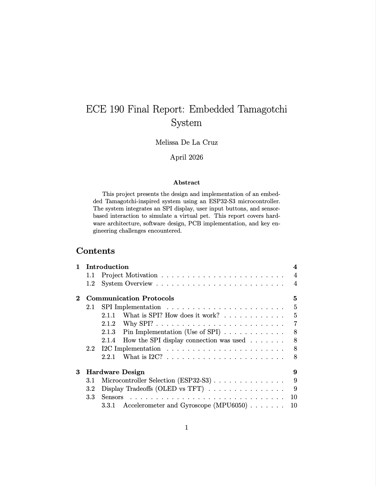
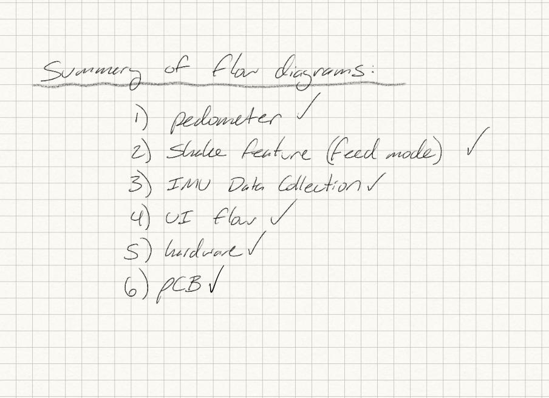

Project Overview
The goal was to recreate a classic virtual pet using modern microcontrollers. This project implements a real-time hunger, play, and happiness mood levels, non-volatile storage for saving pet progress, and a dynamic UI.
This demo showcases real-time interaction between the ESP32 microcontroller, SPI display rendering, and GPIO button inputs (left, center, right). The buttons trigger state transitions within the system, demonstrating interrupt-driven input handling and dynamic UI updates.
Project Gallery

Final assembled Tamagotchi device.

Front view showing OLED display and controls.

Rear enclosure and battery integration.

Internal PCB and wiring.

Click to open the full report.
Hardware Architecture
Microcontroller
The ESP-32-s3, provided by UCSD's Envision, was utilized for this project.
Display
The 0.96" SPI Serial 128*64OLED LCD Display SSD1306 was used.
Power
A Lithium Polymer battery was integrated for its long-term use. (update)
PCB Design
KiCAD was used for the PCB design. JLCPCB was used to manufacture the PCB.
PCB Design

Complete schematic showing the ESP32-S3, OLED display, MPU6050 IMU, buttons, power circuitry, and battery interface.

3D PCB rendering created in KiCad prior to fabrication.

Fabricated PCB (front view).

Fabricated PCB (back view).
Software Implementation (of pedometer)
#include "pedometer.h"
Pedometer::Pedometer() {
windowSize = DEFAULT_WINDOW;
buffer = new float[windowSize];
bufIndex = 0;
stepCount = 0;
happiness = 0;
stepDetected = false;
baseline = 29.0;
lastStepTime = 0;
// Initialize buffer
for (int i = 0; i < windowSize; i++) {
buffer[i] = 0;
}
}
void Pedometer::begin() {
bufIndex = 0;
stepCount = 0;
happiness = 0;
stepDetected = false;
lastStepTime = 0;
for (int i = 0; i < windowSize; i++) {
buffer[i] = 0;
}
}
// ---- needs to be more accurate (but good results when attatched to hip/belt) -----
bool Pedometer::update(float ax, float ay, float az) {
float l1 = calculateL1Norm(ax, ay, az);
// Add to buffer (rolling buffer for incoming data)
buffer[bufIndex] = l1;
bufIndex = (bufIndex + 1) % windowSize;
float avg = calculateMovingAverage();
float dt = avg - baseline; //comparing delta to a calibrated baseline (looking for movement above baseline level)
// DEBUG: Print values every 1 second
static unsigned long lastDebugPrint = 0;
if (millis() - lastDebugPrint > 1000) {
lastDebugPrint = millis();
Serial.print("L1: ");
Serial.print(l1);
Serial.print(" | Avg: ");
Serial.print(avg);
Serial.print(" | Baseline: ");
Serial.print(baseline);
Serial.print(" | dt: ");
Serial.print(dt);
Serial.print(" | StepDetected: ");
Serial.print(stepDetected ? "true" : "false");
Serial.print(" | Steps: ");
Serial.println(stepCount);
}
bool stepOccurred = false;
if (detectStep(dt) && !stepDetected) {
stepCount++;
stepDetected = true;
lastStepTime = millis();
stepOccurred = true;
Serial.print("*** STEP DETECTED! *** Total: ");
Serial.println(stepCount);
if (stepCount % 15 == 0 && stepCount != 0) {
if (happiness < 5) {
happiness++;
Serial.print("Happiness increased to: ");
Serial.println(happiness);
}
}
}
if (dt < 1.0) {
stepDetected = false;
}
return stepOccurred;
}
void Pedometer::resetSteps() {
stepCount = 0;
}
void Pedometer::setStepCount(int value) {
if (value >= 0) {
stepCount = value;
}
}
void Pedometer::setWindowSize(int size) {
delete[] buffer;
windowSize = size;
buffer = new float[windowSize];
bufIndex = 0;
for (int i = 0; i < windowSize; i++) {
buffer[i] = 0;
}
}
float Pedometer::calculateL1Norm(float ax, float ay, float az) { // manhattan distance (ideal for noisy data)
return abs(ax) + abs(ay) + abs(az);
}
float Pedometer::calculateMovingAverage() { //averages the last several samples
float avg = 0;
for (int i = 0; i < windowSize; i++) {
avg += buffer[i];
}
return avg / windowSize;
}
bool Pedometer::detectStep(float dt) {
return dt > 2.0; // Try changing this to 1.0 or 1.5 if needed (detects if step is dt is higher than 2.0)
}
void Pedometer::setHappiness(int value) {
if (value >= 0 && value <= 5) {
happiness = value;
}
}

Click to view all flow diagrams.